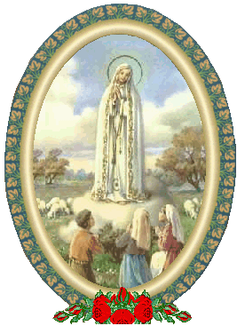
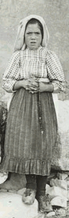
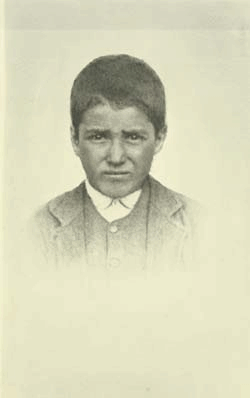
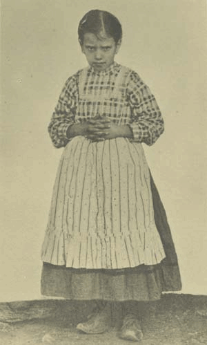

"APRESENTAÇÃO"
Em Fátima, Portugal, no ano 1917, NOSSA
SENHORA apareceu a três pequenos 
Francisco e Jacinta morreram cerca de 3 anos após as Manifestações Sobrenaturais e a Lucia, acolhendo uma decidida inspiração interior, entrou num Convento Carmelita, seguindo a vida religiosa, preparando-se para melhor servir a DEUS divulgando a Mensagem para o mundo.

A Irmã Lúcia escreveu diversos
livros sobre os acontecimentos em Fátima e também, um livro muito especial
com o nome: “APELO DA MENSAGEM
DE FÁTIMA”, onde explica com clareza o conteúdo das
Palavras de DEUS transmitidas por NOSSA SENHORA na Cova da Iria. Os Apelos
são dirigidos ao coração de todos os fieis, ensinando procedimentos e atitudes que
devem ser cultivadas pelas pessoas que querem estabelecer uma relação de amizade
com o SENHOR e desejam viver em plenitude, alcançando felicidade ainda nesta
vida. Os APELOS alertam também a humanidade sobre o perigo de viver distante
de DEUS, indiferente aos Mandamentos e 
Nos anos que se seguiram após a mencionada publicação, em face de insistentes pedidos de seus superiores, depois de conversar particularmente com o Papa João Paulo II, que lhe concedeu ampla autorização, e em obediência as solicitações do Padre Provincial do Carmelo, Frei Jeremias Carlos Vechina, Lucia escreveu: “COMO VEJO A MENSAGEM DE FÁTIMA” (através dos tempos e dos acontecimentos). È um depoimento valioso que completa as informações contidas no livro anterior, propiciando uma ampla e consistente visão sobre o valor e a preciosidade da Mensagem Divina.
Aqui neste Site procuramos evidenciar
de modo sintetizado, com a maior grandeza ao nosso alcance, a imensa luz que foi
derramada sobre a humanidade através da Mensagem Celeste, sobre a qual, com
discernimento e sabedoria a Irmã Lucia se manifestou 
Assim, a Mensagem de Fátima é sempre atual e moderna, e expressa a última e eterna Vontade de DEUS em relação à humanidade que ELE Mesmo inventou e criou: o SENHOR quer que a vida no mundo exista de conformidade com o desejo do CRIADOR, a fim de que as pessoas se preparem no presente, para desfrutarem a alegria da eternidade.
Como o violinista afina as cordas para harmonizar os sons do instrumento, DEUS iniciou a preparação das crianças que escolheu enviando-lhes um Anjo com mensagem de paz e oração, que as introduziu num clima sobrenatural, de fé, esperança e amor. O Anjo falou: “Não temais, sou o Anjo da Paz. Orai comigo”. Ajoelhando, curvou a fronte até tocar o chão. Gesto que foi num mesmo impulso, acompanhado pelas crianças que também repetiram com o Anjo a oração que ele pronunciava: “Meu DEUS, eu creio, adoro, espero e Vos amo. Peço-Vos perdão para os que não crêem, não adoram, não esperam e não Vos amam”.
Nesta Mensagem, a Irmã Lucia diz que vê DEUS no seu Anjo, começando por introduzir as crianças num caminho de fé: “Meu DEUS, eu creio”.